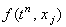
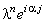
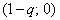
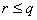
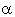
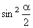

|
2.1. Исследование устойчивости.
Явная разностная схема для уравнения (6.1) имеет вид:
Исследуем её устойчивость с помощью спектрального метода. Для этого
отбрасываем член ,
наличие которого, как известно, не оказывает влияния на устойчивость разностной схемы,
и представляем решение в виде гармоники (3.7):
Далее, упрощаем полученное выражение, деля левую и правую его части на :
Используя зависимости (3.9), (3.10), получаем формулу
из которой выражаем  :
Комплексный вид полученного выражения свидетельствует о том, что для устойчивости разностной схемы
(6.2) согласно необходимому условию устойчивости разностных схем (3.8) требуется, чтобы собственные
числа оператора перехода были расположены внутри или на границе круга радиусом 1,
центр которого находится в начале координат комплексной плоскости. :
Комплексный вид полученного выражения свидетельствует о том, что для устойчивости разностной схемы
(6.2) согласно необходимому условию устойчивости разностных схем (3.8) требуется, чтобы собственные
числа оператора перехода были расположены внутри или на границе круга радиусом 1,
центр которого находится в начале координат комплексной плоскости.
Введём следующие обозначения:
Следовательно, собственные числа оператора перехода расположены на комплексной плоскости на
окружности с центром в точке  и радиусом r (см. рисунок). Данная окружность
не выходит за границы круга, соответствующего условию устойчивости (3.8), только при выполнении
неравенства:
Так как , правое условие выполняется автоматически.
Рассмотрим более подробно левое условие:
Данное выражение содержит переменную величину - аргумент комплексного числа . Чтобы гарантировать устойчивость явной разностной схемы
(6.2) независимо от значения ,
следует перейти к более строгому условию, задавая для  максимально возможное значение, равное 1:
Выражение (6.3) является условием устойчивости явной разностной схемы (6.2), аппроксимирующей
дифференциальное уравнение (6.1).
|